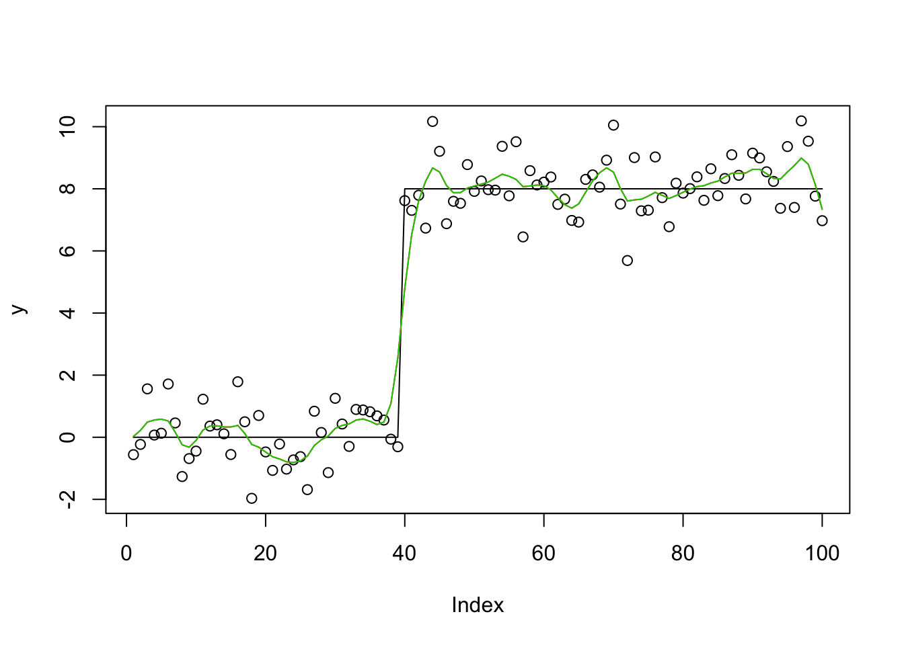
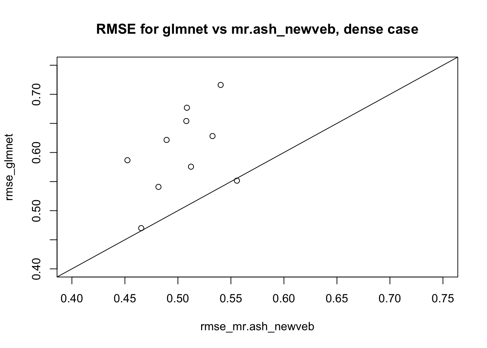
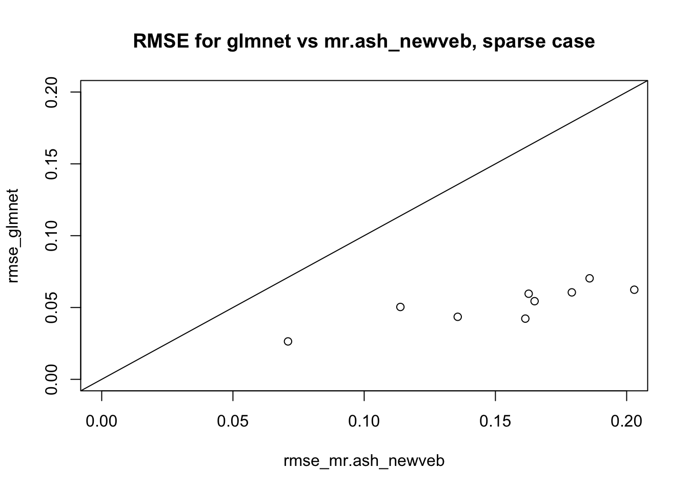

Last updated: 2020-06-18
Checks: 7 0
Knit directory: misc/analysis/
This reproducible R Markdown analysis was created with workflowr (version 1.6.1). The Checks tab describes the reproducibility checks that were applied when the results were created. The Past versions tab lists the development history.
Great! Since the R Markdown file has been committed to the Git repository, you know the exact version of the code that produced these results.
Great job! The global environment was empty. Objects defined in the global environment can affect the analysis in your R Markdown file in unknown ways. For reproduciblity it’s best to always run the code in an empty environment.
The command set.seed(1) was run prior to running the code in the R Markdown file. Setting a seed ensures that any results that rely on randomness, e.g. subsampling or permutations, are reproducible.
Great job! Recording the operating system, R version, and package versions is critical for reproducibility.
Nice! There were no cached chunks for this analysis, so you can be confident that you successfully produced the results during this run.
Great job! Using relative paths to the files within your workflowr project makes it easier to run your code on other machines.
Great! You are using Git for version control. Tracking code development and connecting the code version to the results is critical for reproducibility.
The results in this page were generated with repository version 7d949ec. See the Past versions tab to see a history of the changes made to the R Markdown and HTML files.
Note that you need to be careful to ensure that all relevant files for the analysis have been committed to Git prior to generating the results (you can use wflow_publish or wflow_git_commit). workflowr only checks the R Markdown file, but you know if there are other scripts or data files that it depends on. Below is the status of the Git repository when the results were generated:
Ignored files:
Ignored: .DS_Store
Ignored: .Rhistory
Ignored: .Rproj.user/
Ignored: analysis/.RData
Ignored: analysis/.Rhistory
Ignored: analysis/ALStruct_cache/
Ignored: data/.Rhistory
Ignored: data/pbmc/
Untracked files:
Untracked: .dropbox
Untracked: Icon
Untracked: analysis/GHstan.Rmd
Untracked: analysis/GTEX-cogaps.Rmd
Untracked: analysis/PACS.Rmd
Untracked: analysis/Rplot.png
Untracked: analysis/SPCAvRP.rmd
Untracked: analysis/admm_02.Rmd
Untracked: analysis/admm_03.Rmd
Untracked: analysis/compare-transformed-models.Rmd
Untracked: analysis/cormotif.Rmd
Untracked: analysis/cp_ash.Rmd
Untracked: analysis/eQTL.perm.rand.pdf
Untracked: analysis/eb_prepilot.Rmd
Untracked: analysis/eb_var.Rmd
Untracked: analysis/ebpmf1.Rmd
Untracked: analysis/flash_test_tree.Rmd
Untracked: analysis/ieQTL.perm.rand.pdf
Untracked: analysis/m6amash.Rmd
Untracked: analysis/mash_bhat_z.Rmd
Untracked: analysis/mash_ieqtl_permutations.Rmd
Untracked: analysis/mixsqp.Rmd
Untracked: analysis/mr.mash.test.Rmd
Untracked: analysis/mr_ash_modular.Rmd
Untracked: analysis/mr_ash_parameterization.Rmd
Untracked: analysis/mr_ash_pen.Rmd
Untracked: analysis/nejm.Rmd
Untracked: analysis/normalize.Rmd
Untracked: analysis/pbmc.Rmd
Untracked: analysis/poisson_transform.Rmd
Untracked: analysis/pseudodata.Rmd
Untracked: analysis/qrnotes.txt
Untracked: analysis/ridge_iterative_02.Rmd
Untracked: analysis/ridge_iterative_splitting.Rmd
Untracked: analysis/samps/
Untracked: analysis/sc_bimodal.Rmd
Untracked: analysis/shrinkage_comparisons_changepoints.Rmd
Untracked: analysis/susie_en.Rmd
Untracked: analysis/susie_z_investigate.Rmd
Untracked: analysis/svd-timing.Rmd
Untracked: analysis/temp.RDS
Untracked: analysis/temp.Rmd
Untracked: analysis/test-figure/
Untracked: analysis/test.Rmd
Untracked: analysis/test.Rpres
Untracked: analysis/test.md
Untracked: analysis/test_qr.R
Untracked: analysis/test_sparse.Rmd
Untracked: analysis/z.txt
Untracked: code/multivariate_testfuncs.R
Untracked: code/rqb.hacked.R
Untracked: data/4matthew/
Untracked: data/4matthew2/
Untracked: data/E-MTAB-2805.processed.1/
Untracked: data/ENSG00000156738.Sim_Y2.RDS
Untracked: data/GDS5363_full.soft.gz
Untracked: data/GSE41265_allGenesTPM.txt
Untracked: data/Muscle_Skeletal.ACTN3.pm1Mb.RDS
Untracked: data/Thyroid.FMO2.pm1Mb.RDS
Untracked: data/bmass.HaemgenRBC2016.MAF01.Vs2.MergedDataSources.200kRanSubset.ChrBPMAFMarkerZScores.vs1.txt.gz
Untracked: data/bmass.HaemgenRBC2016.Vs2.NewSNPs.ZScores.hclust.vs1.txt
Untracked: data/bmass.HaemgenRBC2016.Vs2.PreviousSNPs.ZScores.hclust.vs1.txt
Untracked: data/eb_prepilot/
Untracked: data/finemap_data/fmo2.sim/b.txt
Untracked: data/finemap_data/fmo2.sim/dap_out.txt
Untracked: data/finemap_data/fmo2.sim/dap_out2.txt
Untracked: data/finemap_data/fmo2.sim/dap_out2_snp.txt
Untracked: data/finemap_data/fmo2.sim/dap_out_snp.txt
Untracked: data/finemap_data/fmo2.sim/data
Untracked: data/finemap_data/fmo2.sim/fmo2.sim.config
Untracked: data/finemap_data/fmo2.sim/fmo2.sim.k
Untracked: data/finemap_data/fmo2.sim/fmo2.sim.k4.config
Untracked: data/finemap_data/fmo2.sim/fmo2.sim.k4.snp
Untracked: data/finemap_data/fmo2.sim/fmo2.sim.ld
Untracked: data/finemap_data/fmo2.sim/fmo2.sim.snp
Untracked: data/finemap_data/fmo2.sim/fmo2.sim.z
Untracked: data/finemap_data/fmo2.sim/pos.txt
Untracked: data/logm.csv
Untracked: data/m.cd.RDS
Untracked: data/m.cdu.old.RDS
Untracked: data/m.new.cd.RDS
Untracked: data/m.old.cd.RDS
Untracked: data/mainbib.bib.old
Untracked: data/mat.csv
Untracked: data/mat.txt
Untracked: data/mat_new.csv
Untracked: data/matrix_lik.rds
Untracked: data/paintor_data/
Untracked: data/temp.txt
Untracked: data/y.txt
Untracked: data/y_f.txt
Untracked: data/zscore_jointLCLs_m6AQTLs_susie_eQTLpruned.rds
Untracked: data/zscore_jointLCLs_random.rds
Untracked: explore_udi.R
Untracked: output/fit.k10.rds
Untracked: output/fit.varbvs.RDS
Untracked: output/glmnet.fit.RDS
Untracked: output/test.bv.txt
Untracked: output/test.gamma.txt
Untracked: output/test.hyp.txt
Untracked: output/test.log.txt
Untracked: output/test.param.txt
Untracked: output/test2.bv.txt
Untracked: output/test2.gamma.txt
Untracked: output/test2.hyp.txt
Untracked: output/test2.log.txt
Untracked: output/test2.param.txt
Untracked: output/test3.bv.txt
Untracked: output/test3.gamma.txt
Untracked: output/test3.hyp.txt
Untracked: output/test3.log.txt
Untracked: output/test3.param.txt
Untracked: output/test4.bv.txt
Untracked: output/test4.gamma.txt
Untracked: output/test4.hyp.txt
Untracked: output/test4.log.txt
Untracked: output/test4.param.txt
Untracked: output/test5.bv.txt
Untracked: output/test5.gamma.txt
Untracked: output/test5.hyp.txt
Untracked: output/test5.log.txt
Untracked: output/test5.param.txt
Unstaged changes:
Modified: analysis/ash_delta_operator.Rmd
Modified: analysis/ash_pois_bcell.Rmd
Modified: analysis/lasso_em.Rmd
Modified: analysis/minque.Rmd
Modified: analysis/mr_missing_data.Rmd
Note that any generated files, e.g. HTML, png, CSS, etc., are not included in this status report because it is ok for generated content to have uncommitted changes.
These are the previous versions of the repository in which changes were made to the R Markdown (analysis/mr_ash_new_veb.Rmd) and HTML (docs/mr_ash_new_veb.html) files. If you’ve configured a remote Git repository (see ?wflow_git_remote), click on the hyperlinks in the table below to view the files as they were in that past version.
| File | Version | Author | Date | Message |
|---|---|---|---|---|
| Rmd | 7d949ec | Matthew Stephens | 2020-06-18 | workflowr::wflow_publish(“analysis/mr_ash_new_veb.Rmd”) |
The goal here is to investigate a new VEB approximation for mr.ash. It builds on the use of EM and ridge regression to fit the Lasso and Bayesian lasso here.
It is based on the model: \[y = Xb + e\] \[e \sim N(0,s^2)\] \[b_j | s_j \sim N(0,s_j^2)\] \[s^2_j \sim discrete(\pi, s_0^2)\] where \[s_0\] denotes the usual grid of values of the variances we use in ash (and mr.ash), and \(\pi\) are the usual mixture proportions.
This is the usual mr.ash model, just rewritten by introducing the \(s^2_j\) as latent variables.
We will form the variational approximation to the posterior \[q(b,s_1^2,\dots,s_p^2) = q(b) \prod_j q(s^2_j)\].
Here \(q(b)\) is given by a ridge regression, \(q(b) = p(b|y,\hat{s_j^2})\) where the prior precision is given by its expectation under the variational approximation: \[1/\hat{s_j^2} = E_q(1/s_j^2).\] Note that we will never be able to get down to \(s_j^2=0\) because that would produce infinite here… but we can have a sequence of very small values.
For \(q(s^2_j)\) we have that it is the same posterior as we would get from an observation \(x_j:=\sqrt(E(b_j^2))\) from \(x_j \sim N(0,s_j^2)\). So the posterior probability that \(s^2_j\) came from component \(k\) is proportional to \(\pi_k p(x_j | s_k^2) = \pi_k dnorm(x_j, 0, s_k^2)\). So `dnorm(outer(x_j, sa, ))
softmax = function(x){
x = x- max(x)
y = exp(x)
return(y/sum(y))
}
calc_s2hat = function(y,X,XtX,EB,EB2){
n = length(y)
Xb = X %*% EB
s2hat = as.numeric((1/n)* (t(y) %*% y - 2*sum(y*Xb) + sum(XtX * EB2)))
}
# sa2 is the grid of prior variances
mr.ash_newveb = function(y,X,W.init = NULL,s2=1,sa2 = NULL ,w=NULL,niter=100,update.w=c("mixsqp","EM","none"), update.s2=c("mle","none")){
update.s2 = match.arg(update.s2)
if(is.null(sa2)){
K=20
sa2 = sd(y)^2 * (2^(0.05*((1:K))) - 1)^2
}
K = length(sa2)
n = nrow(X)
p = ncol(X)
XtX = t(X) %*% X
Xty = t(X) %*% y
obj = rep(0,niter)
EB = rep(0,p) # first moments of B under q
EB2 = diag(p) # second moments
# these are the key initializations
if(is.null(W.init)){
W = rep(1,p) # the weights are the expected(1/s^2_j) used in ridge regression
} else {
W = W.init
}
if(is.null(w)){
w = rep(1/K,K)
}
for(i in 1:niter){
V = chol2inv(chol(XtX+ diag(s2*W)))
Sigma1 = s2*V # posterior variance of b
varB = diag(Sigma1)
mu1 = as.vector(V %*% Xty) # posterior mean of b
EB = mu1
EB2 = Sigma1 + outer(mu1,mu1)
loglik = -0.5* log(sa2) + dnorm(outer(1/sqrt(sa2),sqrt(diag(EB2)),FUN = "*"),log=TRUE) # K by p matrix
if(update.w== "mixsqp"){
w = mixsqp::mixsqp(t(loglik),log=TRUE,control = list(verbose=FALSE))$x
}
log_post = loglik + log(w)
alpha = apply(log_post, 2, softmax)
if(update.w=="EM"){
w = rowMeans(alpha)
}
if(update.s2=="mle"){
s2 = calc_s2hat(y,X,XtX,EB,EB2)
}
W = as.vector(colSums(alpha*(1/sa2))) # the weights are the expected(1/s^2_j)
}
return(list(bhat=EB,alpha=alpha,s2 = s2, w=w, sa2=sa2))
}set.seed(123)
sd = 1
n = 100
p = n
X = matrix(0,nrow=n,ncol=n)
for(i in 1:n){
X[i:n,i] = 1:(n-i+1)
}
#X = X %*% diag(1/sqrt(colSums(X^2)))
btrue = rep(0,n)
btrue[40] = 8
btrue[41] = -8
y = X %*% btrue + sd*rnorm(n)
plot(y)
lines(X %*% btrue)
y.mrash.new = mr.ash_newveb(y,X,update.w="EM")
lines(X %*% y.mrash.new$bhat,col=2)
y.mrash.new.init = mr.ash_newveb(y,X,update.w="EM")
lines(X %*% y.mrash.new.init$bhat,col=3)
This is an example where we have seen convergence problems before.
library(glmnet)Loading required package: MatrixLoaded glmnet 3.0-2 set.seed(123)
n <- 50
p <- 100
p_causal <- 50 # number of causal variables (simulated effects N(0,1))
pve <- 0.95
nrep = 10
rmse_mr.ash_newveb = rep(0,nrep)
rmse_glmnet = rep(0,nrep)
for(i in 1:nrep){
sim=list()
sim$X = matrix(rnorm(n*p),nrow=n)
B <- rep(0,p)
causal_variables <- sample(x=(1:p), size=p_causal)
B[causal_variables] <- rnorm(n=p_causal, mean=0, sd=1)
sim$B = B
sim$Y = sim$X %*% sim$B
E = rnorm(n,sd = sqrt((1-pve)/(pve))*sd(sim$Y))
sim$Y = sim$Y + E
fit_mr.ash_newveb <- mr.ash_newveb(sim$Y,sim$X,update.w="EM")
fit_glmnet <- cv.glmnet(x=sim$X, y=sim$Y, family="gaussian", alpha=1, standardize=FALSE)
rmse_mr.ash_newveb[i] = sqrt(mean((sim$B-fit_mr.ash_newveb$bhat)^2))
rmse_glmnet[i] = sqrt(mean((sim$B-coef(fit_glmnet)[-1])^2))
}
plot(rmse_mr.ash_newveb,rmse_glmnet, xlim=c(0.4,0.75),ylim=c(0.4,0.75), main="RMSE for glmnet vs mr.ash_newveb, dense case")
abline(a=0,b=1)
Try same example, modified to be sparse. Recall that in this example here, VEBlasso did worse than glmnet.
library(glmnet)
set.seed(123)
n <- 50
p <- 100
p_causal <- 5 # number of causal variables (simulated effects N(0,1))
pve <- 0.95
nrep = 10
rmse_mr.ash_newveb = rep(0,nrep)
rmse_glmnet = rep(0,nrep)
for(i in 1:nrep){
sim=list()
sim$X = matrix(rnorm(n*p),nrow=n)
B <- rep(0,p)
causal_variables <- sample(x=(1:p), size=p_causal)
B[causal_variables] <- rnorm(n=p_causal, mean=0, sd=1)
sim$B = B
sim$Y = sim$X %*% sim$B
E = rnorm(n,sd = sqrt((1-pve)/(pve))*sd(sim$Y))
sim$Y = sim$Y + E
sim$s2 = ((1-pve)/(pve))*sd(sim$Y)^2
fit_mr.ash_newveb <- mr.ash_newveb(sim$Y,sim$X,update.w="EM")
fit_glmnet <- cv.glmnet(x=sim$X, y=sim$Y, family="gaussian", alpha=1, standardize=FALSE)
rmse_mr.ash_newveb[i] = sqrt(mean((sim$B-fit_mr.ash_newveb$bhat)^2))
rmse_glmnet[i] = sqrt(mean((sim$B-coef(fit_glmnet)[-1])^2))
}
plot(rmse_mr.ash_newveb,rmse_glmnet, xlim=c(0,.2),ylim=c(0,0.2), main="RMSE for glmnet vs mr.ash_newveb, sparse case")
abline(a=0,b=1)
Try again, with fixing true g (setting the 0 variance to 1e-6).
fit_mr.ash_newveb_trueg <- mr.ash_newveb(sim$Y,sim$X,
sa2= c(1e-6,1),w=c(0.95,0.05),update.w="none")
sqrt(mean((sim$B-fit_mr.ash_newveb_trueg$bhat)^2))[1] 0.1656015sqrt(mean((sim$B-fit_mr.ash_newveb$bhat)^2))[1] 0.1649152fit_mr.ash_newveb_trueg_trues2 <- mr.ash_newveb(sim$Y,sim$X,
sa2= c(1e-6,1),w=c(0.95,0.05),update.w="none",s2=sim$s2,update.s2="none")
sqrt(mean((sim$B-fit_mr.ash_newveb_trueg_trues2$bhat)^2))[1] 0.1656067On investigation, the problem is that the algorithm is sticky between s and b. In this case it basically ends up ridge regression with every b having the higher variance. The alpha matrix ends up having all its weight on the larger component, for every b.
We could try initializing the W weights using blasso_veb from lasso_em.html.
sessionInfo()R version 3.6.0 (2019-04-26)
Platform: x86_64-apple-darwin15.6.0 (64-bit)
Running under: macOS Mojave 10.14.6
Matrix products: default
BLAS: /Library/Frameworks/R.framework/Versions/3.6/Resources/lib/libRblas.0.dylib
LAPACK: /Library/Frameworks/R.framework/Versions/3.6/Resources/lib/libRlapack.dylib
locale:
[1] en_US.UTF-8/en_US.UTF-8/en_US.UTF-8/C/en_US.UTF-8/en_US.UTF-8
attached base packages:
[1] stats graphics grDevices utils datasets methods base
other attached packages:
[1] glmnet_3.0-2 Matrix_1.2-18
loaded via a namespace (and not attached):
[1] Rcpp_1.0.4.6 knitr_1.28 whisker_0.4 magrittr_1.5
[5] workflowr_1.6.1 lattice_0.20-40 R6_2.4.1 rlang_0.4.5
[9] foreach_1.4.8 stringr_1.4.0 tools_3.6.0 grid_3.6.0
[13] xfun_0.12 git2r_0.26.1 iterators_1.0.12 htmltools_0.4.0
[17] yaml_2.2.1 digest_0.6.25 rprojroot_1.3-2 later_1.0.0
[21] codetools_0.2-16 promises_1.1.0 fs_1.3.2 shape_1.4.4
[25] glue_1.4.0 evaluate_0.14 rmarkdown_2.1 stringi_1.4.6
[29] compiler_3.6.0 backports_1.1.5 httpuv_1.5.2